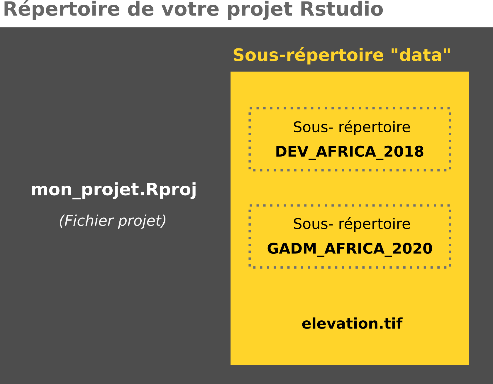

Les différents types et formats de données pris en charge par R
Auteur·rice
Hugues pecout
Date de publication
16 février 2023
De nombreuses de fonctions (primitives ou non) permettent d’importer et d’exporter des données de différents formats.
Tableau de données
Fichier texte simple
Un fichier texte simple (ou fichier texte brut) est un fichier dont le contenu représente uniquement une suite de caractères. Il peut s’ouvrir avec n’importe quel éditeur de texte et utilise nécessairement une forme particulière de codage des caractères.
Plusieurs fonctions primitives permettent d’importer et d’exporter des fichiers texte simples, comme les fichiers csv, txt , tsv…
Import
read.delim() : fichiers délimités par un symbole quelconque et “.” en séparateur décimal
read.delim2() : fichiers délimités par un symbole quelconque et “,” en séparateur décimal
read.table() : pour des fichiers texte délimités par des espaces
read.csv() : pour des fichiers texte délimités par des virgules (format csv)
read.csv2() : pour des fichiers texte délimités par des points-virgules (format csv français)
Pour que l’import de données s’effectue correctement, il est parfois nécessaire de renseigner plusieurs arguments, comme par exemple :
header = valeur logique qui indique si la première ligne contient les noms des variables. sep = indique le caractère utilisé comme séparateur de champ (ex : “;”) encoding = Chaîne de caractère qui précise l’encodage utilisé pour le fichier (ex : “UTF-8”).
Important
N’oubliez pas d’assigner le résultat dans un objet pour garder en mémoire vos données importées.
# Exemple d'utilisation de read.table()mon_tableau <-read.table(file ="../data/DEV_AFRICA_2018/afrika_don_meta.csv", header =TRUE,sep=";",encoding ="UTF-8")# Le tableau importé est stocké dans un objet data.frameclass(mon_tableau)
[1] "data.frame"
Export
Des fonctions primitives permettent également d’exporter votre tableau de données vers différents format texte.
write.table() : pour tous les types de formats texte simple (séparateur à renseigner)
write.csv() : pour exporter en csv (séparateur virgule)
write.csv2() : pour exporter en csv (séparateur points-virgules)
Voir l’exemple
# Exemple write.table()write.table(x = mon_tableau, file ="../data/tableau.txt", sep ="\t", col.names =TRUE, fileEncoding ="UTF-8")# Exemple write.csv()write.csv(x = mon_tableau, file ="../data/tableau.csv")
Fichier Excel
Il est parfois nécessaire d’importer des tableaux de données stockées dans un format propriétaire, comme par exemple Excel (xls, xlsx) ou SAS. Plusieurs packages vous permettent d’importer ce genre de format, et même d’exporter vos données dans ce type de format.
Import
Vous pouvez par exemple importer un fichier Excel avec le package readxl.
install.packages("readxl")
Important
Le packages readxl fait partie de l’écosystème tidyverse (cf. module x). Pour cette raison, le tableau importé est mis en mémoire dans un objet tibble et non dataframe. Il s’agit de deux objets très semblables mais pas identiques. Pour convertir un tibble en dataframe, vous pouvez utiliser la fonction as.data.frame().
library(readxl)mon_tableau <-read_excel(path ="../data/DEV_AFRICA_2018/afrika_don.xls", sheet ="afrika_meta", skip =0,col_names =TRUE)# Le tableau importé est stocké dans un objet data.frameclass(mon_tableau)
[1] "tbl_df" "tbl" "data.frame"
Export
Pour exporter un dataframe (ou tibble) dans un fichier au format Excel, vous pouvez utiliser le package openxlsx et sa fonction write.xlsx().
install.packages("openxlsx")
Important
Le packages openxlsx permet uniquement de lire et écrire les fichiers Excel comportant l’extension .xlsx.
Le package haven permet de gérer des fichiers propriétaires de différents formats comme SAS, SPSS, Stata, dbf…
install.packages("haven")
Important
Tout comme readxl, ce package fait partie de l’écosystème tidyverse (cf. module x). Le tableau importé est mis en mémoire dans un objet tibble et non dataframe. Vous pouvez utiliser la fonction as.data.frame() pour le convertir.
Le package sf permet de lire les différents formats de couche géographique vectorielle (ESRI Shapefile, GeoJSON, Keyhole Markup Language, GeoPackage…). Pour cela, ce package interface avec la librairie système GDAL. Les SIG fonctionnent de la même façon !
install.packages("sf")
Note
L’installation du package sf demande un prérequis. La librairie système GDAL doit être installée sur votre machine. Il est parfois nécessaire de la faire soi-même sur certains système d’exploitation comme GNU/Linux.
Une couche géographique importée via la fonction st_read() du package sf est mise en mémoire dans un objet sf (simple feature). Il s’agit en quelque sorte d’un dataframe ou chaque individu est associé à une géométrie.
Export
La fonction st_write() permet d’enregistrer un objet sf sur sa machine, dans le format que l’on souhaite.
Voir les exemples
library(sf)# Enregistrement en format ESRI Shapefilest_write(obj = map_africa, dsn ="../data/map_africa.shp", layer_options ="ENCODING=UTF-8")# Enregistrement en format GeoPackagest_write(obj = map_africa, dsn ="../data/map_africa.gpkg", layer ="pays")
Raster
Le package terra permet aussi de lire et d’écrire des données géographiques vectorielles (comme sf) mais sa valeur ajoutée se situe au niveau de la manipulation de données raster.
install.packages("terra")
Import
Pour importer des données Raster, vous pouvez utiliser la fonction rast().
Important
Un Raster importé via la fonction rast() du package terra est mis en mémoire dans un objet SpatRaster.
Il est également possible d’exporter les sorties graphiques en format image avec les fonctions primitives suivantes :
bmp()
jpeg()
png()
tiff()
Ces fonctions doivent être utilisées avec la fonction dev.off(). Exemple :
Voir l’exemple
# Ouverture de la création de l'imagepng(filename ="../img/mon_image.jpg")# Création de la représentation graphique souhaitéeplot(1:10)# Fermeture (enregistrement) de l'image pngdev.off()
Important
La fonction dev.off() permet de clôturer la représentation graphique et d’enregistrer l’image. Si aucun dev.off() n’est exécuté à la suite de ces fonctions d’export, votre fenêtre graphique restera figée, et inutilisable.
Il est également possible d’exporter vos représentations graphiques dans un format vectoriel, qui permet leur retouche avec des logiciel de DAO (Inkscape, Adobe Illustrator…). Les fonction pour réaliser cela sont :
pdf()
svg()
L’utilisation de ces fonctions primitives est similaire à l’export d’images matricielles. Exemple :
Voir l’exemple
# Ouverture de la création de l'imagepdf(file ="../img/mon_image.pdf")# Création de la représentation graphique souhaitéeplot(1:10)# Fermeture (enregistrement) du pdfdev.off()
3. Placez les données (décompressées) dans le répertoire de votre projet, de la façon suivante :

4. Créez un script R à la racine de votre projet Rstudio
File/New File/R script
5. Importer les fichiers suivants en utilisant les fonctions adéquates :
data/DEV_AFRIA_2018/afrika_don.csv
data/DEV_AFRICA_2018/afrika_don.xls (1er onglet)
data/GADM_AFRICA_2020/afrika_map.shp
data/elevation.tif
Un peu d’aide ?
# Pour importer un fichier csv (afrika_don.csv)read.csv()read.csv2()# Pour importer un fichier Excel (afrika_don.xls)library(readxl)read_excel()# Pour importer un fichier ESRI Shapefile (afrika_map.shp)library(sf)st_read()# Pour importer un fichier TIF (elevation.tif)library(terra)rast()
---title: "Import et export de données"subtitle: "Les différents types et formats de données pris en charge par R"author: Hugues pecoutdate: last-modifiedordre: 01code-fold: truecode-tools: trueformat: html: theme: cosmo code-copy: true css: styles.css # pdf: # toc: true # number-sections: true # colorlinks: true # output-file: "import" # output-ext: "pdf"---**De nombreuses de fonctions (primitives ou non) permettent d'importer et d'exporter des données de différents formats.**## **Tableau de données**### Fichier texte simpleUn fichier texte simple (ou fichier texte brut) est un fichier dont le contenu représente uniquement une suite de caractères. Il peut s'ouvrir avec n'importe quel éditeur de texte et utilise nécessairement une forme particulière de codage des caractères.Plusieurs fonctions primitives permettent d'importer et d'exporter des fichiers texte simples, comme les fichiers **csv**, **txt** , **tsv**...#### Import- `read.delim()` : fichiers délimités par un symbole quelconque et "." en séparateur décimal- `read.delim2()` : fichiers délimités par un symbole quelconque et "," en séparateur décimal- `read.table()` : pour des fichiers texte délimités par des espaces\- `read.csv()` : pour des fichiers texte délimités par des virgules (format csv)- `read.csv2()` : pour des fichiers texte délimités par des points-virgules (format csv français)Pour que l'import de données s'effectue correctement, il est parfois nécessaire de renseigner plusieurs arguments, comme par exemple :**header** = valeur logique qui indique si la première ligne contient les noms des variables.<br/> **sep** = indique le caractère utilisé comme séparateur de champ (ex : ";")<br/> **encoding** = Chaîne de caractère qui précise l'encodage utilisé pour le fichier (ex : "UTF-8").<br/>::: callout-importantN'oubliez pas d'assigner le résultat dans un objet pour garder en mémoire vos données importées.:::```{r warning = FALSE, message = FALSE , eval = TRUE}#| code-fold: FALSE# Exemple d'utilisation de read.table()mon_tableau <-read.table(file ="../data/DEV_AFRICA_2018/afrika_don_meta.csv", header =TRUE,sep=";",encoding ="UTF-8")# Le tableau importé est stocké dans un objet data.frameclass(mon_tableau)```#### ExportDes fonctions primitives permettent également d'exporter votre tableau de données vers différents format texte.- `write.table()` : pour tous les types de formats texte simple (séparateur à renseigner)- `write.csv()` : pour exporter en csv (séparateur virgule)- `write.csv2()` : pour exporter en csv (séparateur points-virgules)```{r warning = FALSE, message = FALSE , eval = FALSE}#| code-summary: "Voir l'exemple"# Exemple write.table()write.table(x = mon_tableau, file ="../data/tableau.txt", sep ="\t", col.names =TRUE, fileEncoding ="UTF-8")# Exemple write.csv()write.csv(x = mon_tableau, file ="../data/tableau.csv")```\### Fichier ExcelIl est parfois nécessaire d'importer des tableaux de données stockées dans un format propriétaire, comme par exemple Excel (xls, xlsx) ou SAS. Plusieurs packages vous permettent d'importer ce genre de format, et même d'exporter vos données dans ce type de format.#### ImportVous pouvez par exemple importer un fichier Excel avec le package [`readxl`](https://readxl.tidyverse.org/).```{r warning = FALSE, message = FALSE , eval = FALSE}#| code-fold: FALSEinstall.packages("readxl")```::: callout-importantLe packages `readxl` fait partie de l'écosystème `tidyverse` (cf. module [x]()). Pour cette raison, le tableau importé est mis en mémoire dans un objet [`tibble`](https://tibble.tidyverse.org/) et non `dataframe`. Il s'agit de deux objets très semblables mais pas identiques. Pour convertir un `tibble` en `dataframe`, vous pouvez utiliser la fonction `as.data.frame()`.:::```{r warning = FALSE, message = FALSE , eval = TRUE}#| code-fold: FALSElibrary(readxl)mon_tableau <-read_excel(path ="../data/DEV_AFRICA_2018/afrika_don.xls", sheet ="afrika_meta", skip =0,col_names =TRUE)# Le tableau importé est stocké dans un objet data.frameclass(mon_tableau)```#### ExportPour exporter un dataframe (ou tibble) dans un fichier au format Excel, vous pouvez utiliser le package [`openxlsx`](https://cran.r-project.org/web/packages/openxlsx/index.html) et sa fonction `write.xlsx()`.```{r warning = FALSE, message = FALSE , eval = FALSE}#| code-fold: FALSEinstall.packages("openxlsx")```::: callout-importantLe packages `openxlsx` permet uniquement de lire et écrire les fichiers Excel comportant l'extension **.xlsx**.:::```{r warning = FALSE, message = FALSE , eval = FALSE}#| code-summary: "Voir l'exemple"library(openxlsx)write.xlsx(x = mon_tableau, file ="../data/DEV_AFRICA_2018/afrika_don.xlsx")```\### SAS, SPSS & StataLe package [`haven`](https://haven.tidyverse.org/) permet de gérer des fichiers propriétaires de différents formats comme SAS, SPSS, Stata, dbf...```{r warning = FALSE, message = FALSE , eval = FALSE}#| code-fold: FALSEinstall.packages("haven")```::: callout-importantTout comme `readxl`, ce package fait partie de l'écosystème `tidyverse` (cf. module [x]()). Le tableau importé est mis en mémoire dans un objet [`tibble`](https://tibble.tidyverse.org/) et non `dataframe`. Vous pouvez utiliser la fonction `as.data.frame()` pour le convertir.:::#### Fichier SAS```{r warning = FALSE, message = FALSE , eval = FALSE}#| code-summary: "Voir l'exemple"library(haven)# Importmon_tableau <-read_sas(data_file ="../data/data_sas.sas7bdat")# Exportwrite_sas(data = mon_tableau, path ="../data/mon_tableau_sas.sas7bdat")```#### Fichier SPSS```{r warning = FALSE, message = FALSE , eval = FALSE}#| code-summary: "Voir l'exemple"library(haven)# Importmon_tableau <-read_sav(file ="../data/data_spss.sav")# Exportwrite_sav(data = mon_tableau, path ="../data/mon_tableau_spss.sav")```#### Fichier Stata```{r warning = FALSE, message = FALSE , eval = FALSE}#| code-summary: "Voir l'exemple"library(haven)# Importmon_tableau <-read_stata(file ="../data/data_stata.dta")# Exportwrite_dta(data = mon_tableau, path ="../data/mon_tableau_stata.dta")```\## **Couche géographique**### VecteurLe package [`sf`](https://r-spatial.github.io/sf/) permet de lire les différents formats de couche géographique vectorielle (ESRI Shapefile, GeoJSON, Keyhole Markup Language, GeoPackage...). Pour cela, ce package interface avec la librairie système [`GDAL`](https://gdal.org/). Les SIG fonctionnent de la même façon !```{r warning = FALSE, message = FALSE , eval = FALSE}#| code-fold: FALSEinstall.packages("sf")```::: callout-noteL'installation du package [`sf`](https://r-spatial.github.io/sf/) demande un prérequis. La librairie système [`GDAL`](https://gdal.org/) doit être installée sur votre machine. Il est parfois nécessaire de la faire soi-même sur certains système d'exploitation comme GNU/Linux.:::#### Import```{r warning = FALSE, message = FALSE , eval = TRUE}#| code-fold: FALSElibrary(sf)map_africa <-st_read("../data/GADM_AFRICA_2020/afrika_map.shp", quiet =TRUE)class(map_africa)```::: callout-importantUne couche géographique importée via la fonction `st_read()` du package [`sf`](https://r-spatial.github.io/sf/) est mise en mémoire dans un objet sf (simple feature). Il s'agit en quelque sorte d'un dataframe ou chaque individu est associé à une géométrie.:::#### ExportLa fonction `st_write()` permet d'enregistrer un objet sf sur sa machine, dans le format que l'on souhaite.```{r warning = FALSE, message = FALSE , eval = FALSE}#| code-summary: "Voir les exemples"library(sf)# Enregistrement en format ESRI Shapefilest_write(obj = map_africa, dsn ="../data/map_africa.shp", layer_options ="ENCODING=UTF-8")# Enregistrement en format GeoPackagest_write(obj = map_africa, dsn ="../data/map_africa.gpkg", layer ="pays")```\### RasterLe package [`terra`](https://rspatial.org/index.html) permet aussi de lire et d'écrire des données géographiques vectorielles (comme `sf`) mais sa valeur ajoutée se situe au niveau de la manipulation de données raster.```{r warning = FALSE, message = FALSE , eval = FALSE}#| code-fold: FALSEinstall.packages("terra")```#### ImportPour importer des données Raster, vous pouvez utiliser la fonction `rast()`.::: callout-importantUn Raster importé via la fonction `rast()` du package [`terra`](https://rspatial.org/index.html) est mis en mémoire dans un objet SpatRaster.:::```{r warning = FALSE, message = FALSE , eval = TRUE}#| code-fold: FALSElibrary(terra)Elevation_Benin <-rast("../data/elevation.tif") Elevation_Benin```#### ExportLa fonction `writeRaster()` permet d'enregistrer un objet SpatRaster sur sa machine, dans le format que l'on souhaite.```{r warning = FALSE, message = FALSE , eval = FALSE}#| code-summary: "Voir l'exemple"library(terra)writeRaster(x = Elevation_Benin, filename ="../data/Benin_Elevation.tif")```\## **Image**### ImportPour importer des images, le package `png`et `jpeg`, pré-installés avec le language R vous permet d'importer des images.#### PNG```{r}#| code-summary: "Voir l'exemple"library(png)mon_image_png <-readPNG("../img/map.png")```#### JPEG```{r}#| code-summary: "Voir l'exemple"library(jpeg)mon_image_jpg <-readJPEG("../img/wip.jpg")```### ExportIl est également possible d'exporter les sorties graphiques en format image avec les fonctions primitives suivantes :- `bmp()`- `jpeg()`- `png()`- `tiff()`Ces fonctions doivent être utilisées avec la fonction `dev.off()`. Exemple :```{r warning = FALSE, message = FALSE , eval = FALSE}#| code-summary: "Voir l'exemple"# Ouverture de la création de l'imagepng(filename ="../img/mon_image.jpg")# Création de la représentation graphique souhaitéeplot(1:10)# Fermeture (enregistrement) de l'image pngdev.off()```::: callout-importantLa fonction `dev.off()` permet de clôturer la représentation graphique et d'enregistrer l'image. Si aucun dev.off() n'est exécuté à la suite de ces fonctions d'export, votre fenêtre graphique restera figée, et inutilisable.:::Il est également possible d'exporter vos représentations graphiques dans un format vectoriel, qui permet leur retouche avec des logiciel de DAO (Inkscape, Adobe Illustrator...). Les fonction pour réaliser cela sont :- `pdf()`- `svg()`L'utilisation de ces fonctions primitives est similaire à l'export d'images matricielles. Exemple :```{r warning = FALSE, message = FALSE , eval = FALSE}#| code-summary: "Voir l'exemple"# Ouverture de la création de l'imagepdf(file ="../img/mon_image.pdf")# Création de la représentation graphique souhaitéeplot(1:10)# Fermeture (enregistrement) du pdfdev.off()```\## <i class="bi bi-person-workspace"></i> Exercice {.title .exo-title}::: {#exo}[1. Créez un projet Rstudio]{.question}*File/New Project/New Directory...*[2. Téléchargez les données suivantes :]{.question}| Intitulé | Téléchargement ||:-----------------------------------------:|:---------------------------:|| Données pays africains (UN-CEPII) | <ahref="https://bit.ly/3DaCAkX"class="btn btn-outline-warning"role="button"aria-disabled="true"><iclass="bi bi-cloud-arrow-down"></i> Download</a> || Fond de carte Afrique (GADM 2020) | <ahref="https://bit.ly/3DaAUb2"class="btn btn-outline-warning"role="button"aria-disabled="true"><iclass="bi bi-cloud-arrow-down"></i> Download</a> || Raster délévation du Bénin (???) | <ahref="https://bit.ly/3XqLAKR"class="btn btn-outline-warning"role="button"aria-disabled="true"><iclass="bi bi-cloud-arrow-down"></i> Download</a> |[3. Placez les données (décompressées) dans le répertoire de votre projet, de la façon suivante :]{.question}```{r, echo=FALSE, out.width="70%", fig.align='center'}knitr::include_graphics("../img/folder.png")```[4. Créez un script R à la racine de votre projet Rstudio]{.question}*File/New File/R script*[5. Importer les fichiers suivants en utilisant les fonctions adéquates :]{.question}- data/DEV_AFRIA_2018/**afrika_don.csv**\- data/DEV_AFRICA_2018/**afrika_don.xls** (1er onglet)\- data/GADM_AFRICA_2020/**afrika_map.shp**\- data/**elevation.tif**```{r warning = FALSE, message = FALSE , eval = FALSE}#| code-summary: "Un peu d'aide ?"# Pour importer un fichier csv (afrika_don.csv)read.csv()read.csv2()# Pour importer un fichier Excel (afrika_don.xls)library(readxl)read_excel()# Pour importer un fichier ESRI Shapefile (afrika_map.shp)library(sf)st_read()# Pour importer un fichier TIF (elevation.tif)library(terra)rast()```------------------------------------------------------------------------\::: center<ahref="/correction/import.zip"class="btn btn-outline-warning"role="button"aria-disabled="true"><iclass="bi bi-cloud-arrow-down"></i> Corrigé</a>:::```{r warning = FALSE, message = FALSE , eval = FALSE, echo = FALSE, include = FALSE}#| code-summary: "Correction"# Import du fichier csv "afrika_don.csv"data_from_csv <-read.csv2(file ="data/DEV_AFRICA_2018/afrika_don.csv")# Import du fichier xls "afrika_don.xls"library(readxl)data_from_xls <-read_excel(path ="data/DEV_AFRICA_2018/afrika_don.xls")# Import du fichier shp "afrika_map.shp"library(sf)data_from_shp <-st_read("data/GADM_AFRICA_2020/afrika_map.shp", quiet =TRUE)## Import du fichier tif "elevation.tif"library(terra)data_tif <-rast("data/elevation.tif") ```:::\\<!-- ::: center --><!-- <a href="/import.pdf" class="btn btn-info" role="button" aria-disabled="true"><i class="bi bi-file-pdf"></i> Télécharger ce document format PDF</a> --><!-- ::: -->